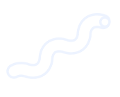
Hi, I'm Monika
Product Designer
Always aiming to self-improve and learn more, I’m driven to design not just for the eye-candy visuals, but for everything that goes in the background.
linkedin / behance / dribbble /
Always aiming to self-improve and learn more, I’m driven to design not just for the eye-candy visuals, but for everything that goes in the background.
linkedin / behance / dribbble /I am Monika, an empathetic and passionate designer, with the aspiration to design meaningful products that help users meet their needs. I’m driven to design not just for the eye-candy visuals, nice typography and colors, but for everything that goes in the background.
Business Intelligence web application
Game event feature design
Identity & access management platform
Menu and dashboard revamp for a business security product: NTSA (Network Traffic Security Analytics)
Mobile web application for a video games store
Empty States for GravityZone security platform
Business Intelligence web application for the Renault Auto Branch investment plan
UI/UX Designer at Renault Digital Finance Hub
TASK: User Research, UX Design, UI Design
GOAL: Help analysts, managers and stakeholders build and consult investment forecasts
according to business objectives by reducing processing time, automating procedures
and therefore increasing their productivity.
TOOLS: Sketch, Invision
OVERVIEW
What is Invest?
A Business Intelligence web app that allows analysts, buyers, budgets owners and other employees responsible for investment plans, to build and consult financial forecasts in a more fast and productive routine, with a reduced processing time, automated procedures and the ability to share information through a more user friendly reporting interface.
BACKGROUND: THE PROBLEM / PROBLEM STATEMENT
The goal / desired outcome / the problem that it was trying to solve
Analysts and managers that work at the Renault investment plan are responsible for bulding forecasts, processing, calculating and analyzing large quantities of data. These are extremely time-consuming processes and the users have to work with complex Excel spreadsheet files, consisting of multiple worksheets featuring extended functionality via VBA scripts and VBA generated UI elements.
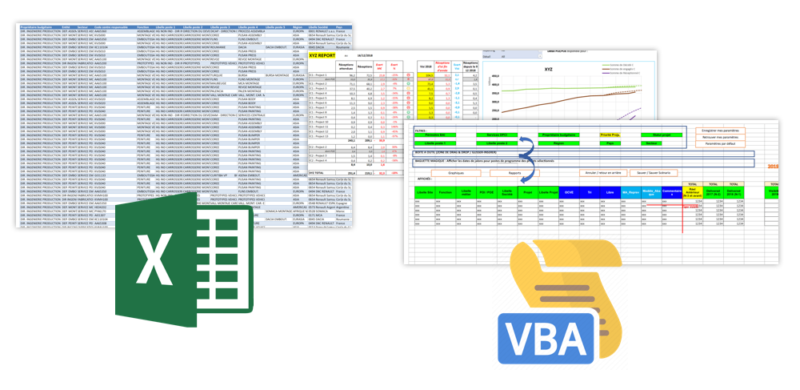The goal was to design a real-time cloud app that automates steps that don’t need human intervention and allows users to focus more on detailed analysis and other procedures with major impact on performance, and less on processing data. Moreover, the general desired outcome would be simplifying the process of the investment plan and saving time by eliminating manual calculations and reducing human errors.
The challenge was to offer a multidimensional reporting tool that addresses different concerns and that enables automated and standardized reporting, while also allowing users to build and run amortization simulations and computed forecast of the investment plan.
ROLES AND RESPONSIBILITIES
My Role
I was part of a cross-functional team of 12 members, including an Agile coach and a Scrum master that helped us adopt an Agile way of working. We worked in two-week sprints and attended all the Scrum ceremonies, which allowed us to collaborate, communicate and iterate more efficiently.
I was the only Designer in my team and worked together with one Frontend Developer, one Business Analyst, one Product Owner, one Technical Team Lead, a few Backend Developers, one Architect, a Devops Engineer, a Scrum Master and an Agile Coach.
During the project, my role was to conduct user interviews, collaborate in design iterations and paper sketching sessions with the product owner and business analyst, create wireframes and high-fidelity prototypes, build and handover the final design to the developers.
PROCESS
User Research, User Persona
The user research consisted of telephone interviews, in-person interviews and filling an online survey. In the first phase, to better understand the users’ goals and pain points in their everyday work activities, I had an online survey with 20 questions sent to different stakeholders, analysts and managers. To my surprise, people were more than reluctant to this survey and I actually had complaints from management regarding this questionnaire and why do I need to know certain job related things. They were clearly not used to being interviewed, as they probably weren't familiar with the concept of user research.
Secondly, I continued with 3 in-person interviews and 3 phone interviews, with a duration of 30-40 minutes each. The user interviews were run with users from Romania, France, Italy and Germany, all Renault employees, and were focused on understanding their workflow.
Based on the interviews, I categorized the users into three personas: the Investment Analyst, the Budget Owner and the Administrator.
The primary persona for the first phase of the project, the MVP, was the Investment Analyst, so all the design decisions were made with this persona in mind.
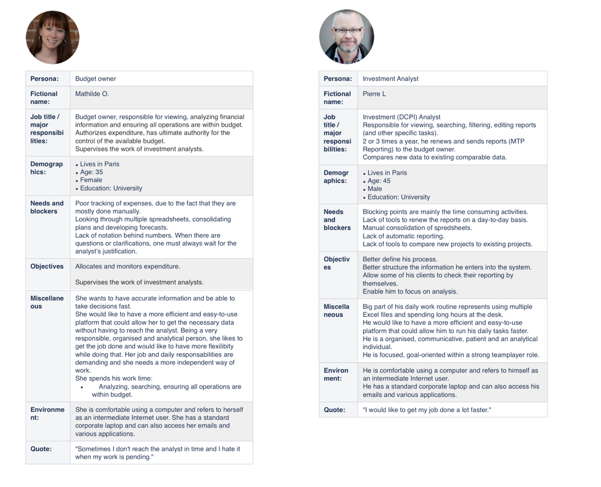User Journey Map
Furthermore, in order to review the experience from the user’s perspective and observe how he interacts with the product, I created a journey map. The process through which the user goes in order to accomplish his goal was complex and required a sequence of events, so a journey map was the only way to have the scenario easy to visualize and create a shared vision for the team.
Key Findings
High Priority:
Medium Priority:
Low Priority:
DESIGN ITERATIONS
Block Diagram, User flow
After better understanding the user’s needs and wants, I started building a block diagram, followed by a user flow. They proved very effective when communicating with the developers during the implementation phase, but also when evaluating individual screens and creating the UI design.
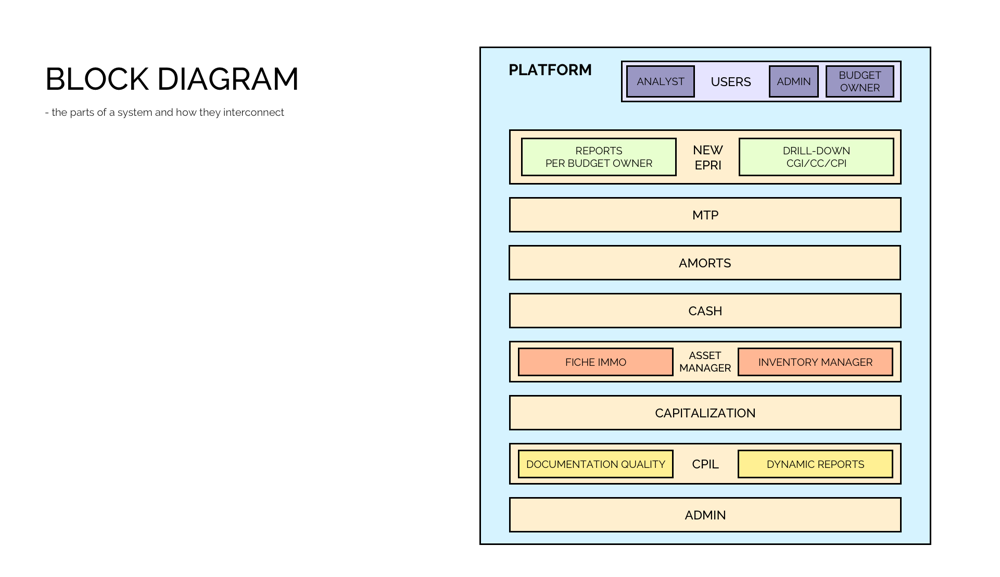 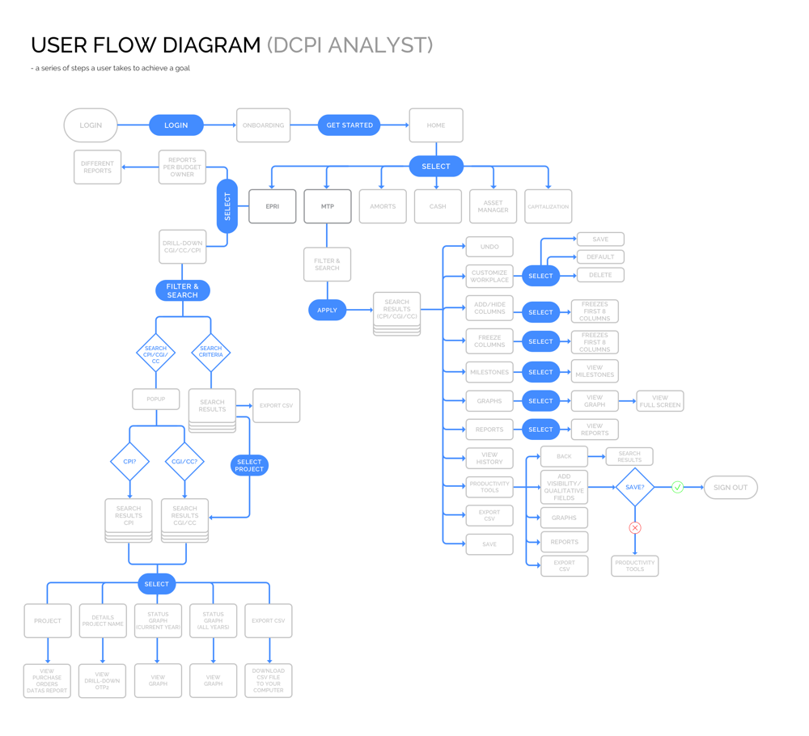Wireframe
In order to collect feedback as fast as possible, I started building the wireframes right from the research phase, when making adjustments to the initial concept represented a low risk. The tool I used to design the wireframes was Balsamiq.
The low-fidelity prototypes were validated during meetings with the Business Analyst and the Product Owner. It was a collaborative and stimulating group work, resulting in more people getting involved in the process and having sessions where I was sketching in Balsamiq together with the Business Analyst, making notes and revisions.
The focus for the MVP was on the New EPRI and MTP sections. New EPRI handled reports per budget owner (the user was able to view the status on all projects/reports) and the drill down functionality (the user was able to filter the content using specific criteria). MTP functioned like an excel file: the user was able to see project details and perform different actions: update project details (visibility of columns, freeze, use qualitative fields), create new models of reports, compare using graphs.
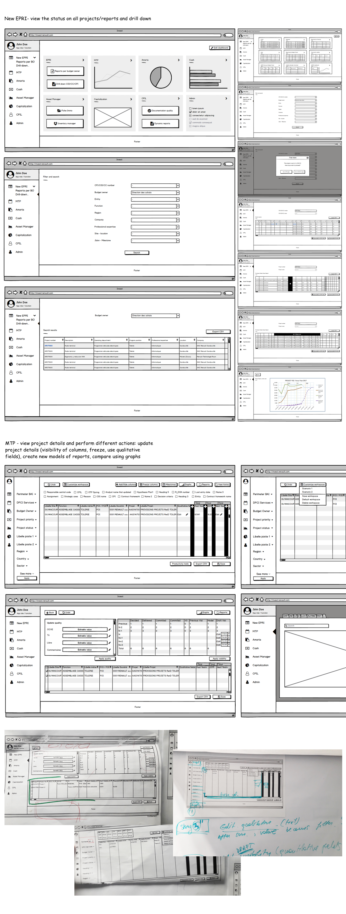It was a big challenge, mostly because the stakeholders had high expectations. They basically wanted to have a cake and eat it too. And as we all know, you can’t simultaneously retain your cake and eat it :). The cake was an all-in-one application with Excel’s complex structure and features, that whould also be user-friendly, fast to navigate, easy to understand and use.
Simplifying it meant to focus on the key functionalities, but also stick to the business requirements and don’t get discouraged by the heavy-data tables, with complex formulas, tens of columns and sheets.
High-fidelity prototyping
After getting the final-design approval from stakeholders and when everybody in the team had a solid understanding of what they are going to build, I started designing the high-fidelity prototypes.
For the UI design, one of my favorite phases during any project, I started by creating a moodboard in Xtensio, using colors, components, icons, fonts and images according to Renault Digital’s guidelines.
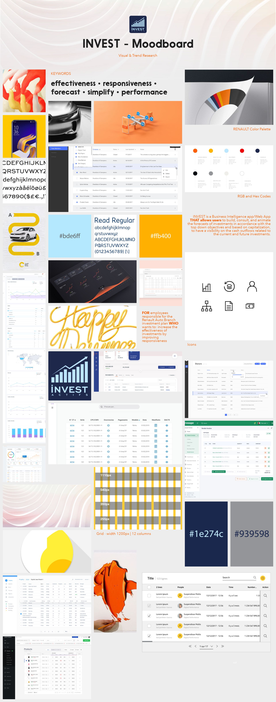Next, I started the hi-fi prototypes by using and adapting components from Renault Digital’s design system. I designed the UI in Sketch and I used the shared Sketch library for the design system components. The Sketch library consisted of custom made icons, a brand color scheme and UI components.
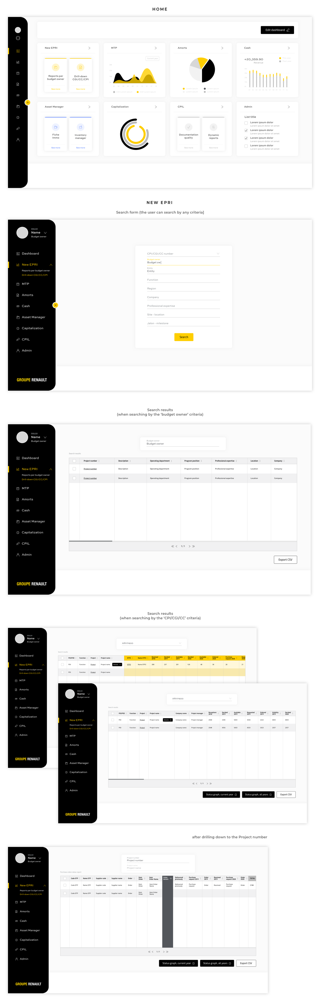To better show the interactivity of the prototypes, I uploaded the screen to Invision. That also facilitated a smooth design handoff, allowing the frontend developer to inspect and get the required information and specifications.
During this phase, I worked closely with the frontend developer, clarifying any technical blocker, understanding the true capabilities and constraints of the platform. For example, having a “freeze column” functionality in a table was a very important business requirement that was almost scrapped due to some problems with the framework used by the engineering team, Angular. Moreover, having more than one fixed column headers was an unforeseen technical problem that took the developers longer than one sprint to solve.
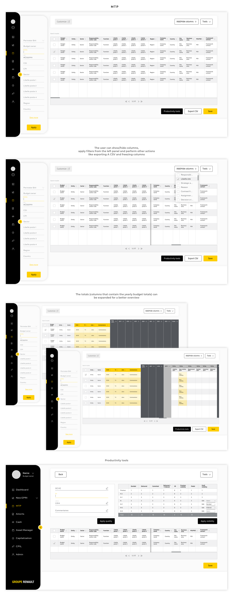OUTCOME AND RESULTS
The challenge / Lessons learned
Since this was the application’s MVP, it is important to highlight that the product continued to grow in an iterative process. I was assigned to other projects, but the remaining screens of the application and addressing the other user personas remained a top priority for future releases. The MVP was successful and plans for the first and second releases continued as scheduled.
It was my first time designing a complex financial application with such an ambitious plan of changing the way-of-working for so many employees. It meant replacing Excel spreadsheet files, hours of manual calculations, reports and analysis, with a modern web application, so I was really excited about the outcome.
An important lesson that I’ve learned was that even though the work may come from the product owner, it’s the individual developers who do it. The product owner that I worked with for this project trusted my design decisions and supported me all the way, but his time was limited. In order to get the design implemented like it was, pixel perfect, I had to get the frontend developer to work with me and not see me as an outsider. Building a relationship with developers is more important than people might think. Designers often feel frustrated that developers don’t implement their beautiful, pixel- perfect designs (if I had a nickel for every time I felt that way… ) and developers think we’re there to make their lives more difficult by giving them a pretty picture to copy with no regard for its technical complexity and deadline. So by talking to the frontend developer about my ideas, understanding what he had to do and letting him suggest things, a real collaboration, like it should always be, took place.
I learned how to effectively justify my design and related design decisions during discussions and I also realized that open communication within the team motivates all the members and drives the entire project.
In the end, I think it was all about managing expectations, weighing the business needs and the user needs, adapting what I wanted to be a perfect design (process) to what was both possible and practical.
Design mockups for a new game feature (a seasonal event) for one of the most popular battle games on PC, World of Tanks.
Self project, Design challenge
TASK: Information Architecture, UX Design, UI Design, Visual Design
GOAL: Tracking the World of Tanks players’ progress in the seasonal event
TOOLS: Adobe XD, Adobe Photoshop
OVERVIEW
What is World Of Tanks?
A team-based, massively multiplayer online (MMO) tank battle game developed by Wargaming. It’s built on a "freemium" business model, but players also have the option of paying a fee for premium vehicles and features.
BACKGROUND: THE PROBLEM / PROBLEM STATEMENT
The goal / desired outcome / the problem that it was trying to solve
The goal of this project was to create an engaging and motivating experience for World of Tanks users, that also tracks the players' progress during a special event. Moreover, I had to take the design requirements specified by the Creative Director and Game Designer into consideration:
ROLES AND RESPONSIBILITIES
My Role
During this project, my role was to build the information architecture and the user flow, create the low-fidelity prototypes, the user interface and the visual design.
PROCESS
Research
Competitive Analysis
With research goals in mind, I gathered information about multiplayer video games and identified a baseline for what users expect.
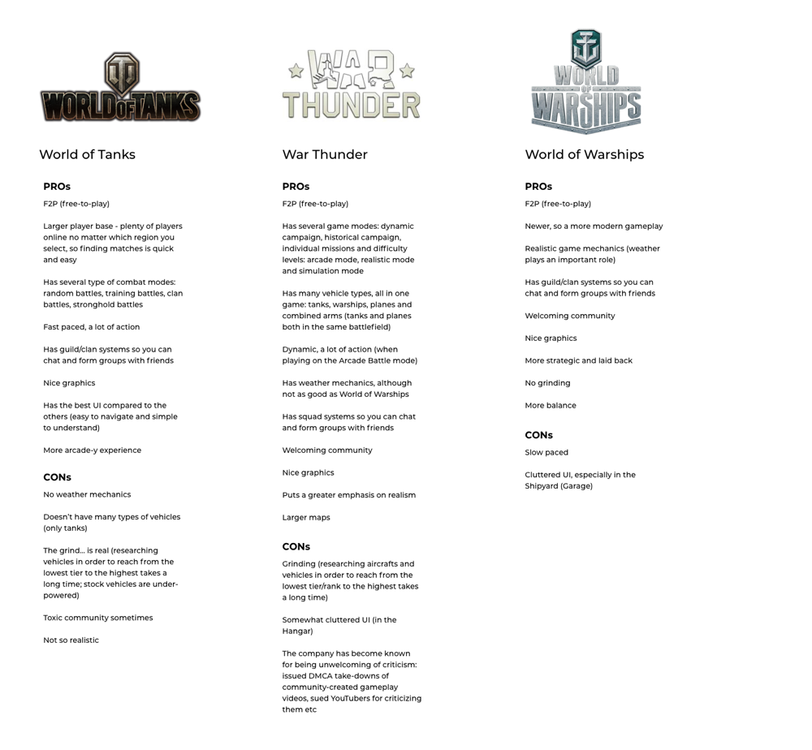After analyzing screenshots and videos from different MMO battle games (World of Tanks, War Thunder, World of Warplanes etc) and familiarizing myself with the interface and basic functionality, I joined two representative and popular groups on Facebook: War Thunder Worldwide and World of Tanks International. As a designer, there is no other place you could get more valuable information about what users want, their frustrations and challenges, than a Facebook group with thousands of members. Here I could easily read through all the posts related to recent events and what players found frustrating, what they liked or disliked. Gamers also like doing live streams and posting videos with gameplays on YouTube, so that also contributed to my research.
Being a World of Tanks player myself a couple of years back, I was also part of the War Thunder Worldwide group back then and knew that these groups would be a gold mine of valuable feedback from avid consumers. The interaction between players is awesome and I got the chance to read some real-time feedback from them.
I also researched past WoT challenges and events (Halloween, Christmas game events) to learn about the general structure of a game mode. Building the information architecture for this event was challenging - I had to organize and structure the content so that the users, the WoT players, would easily adjust to the functionality and find everything they need effortlessly, while also gamifying the experience.
Findings
[SIDE NOTE: for example, in War Thunder, there is a so-called "Battle Trophy" Award that you get when you earn a certain amount of points in a battle (arcade/realistic/ simulator with any vehicle, tank or plane). It’s supposed to gamify the experience and further motivate the player. It works just like a wheel of fortune, but where you often win drive- tests with a tank, even though you only play with aircrafts. Many fans have complained about this on the forums and groups - did I mention that online games consumers are notorious vocal about their frustrations?]
User flow
After better understanding the general structure of a game event and how gamification can engage and motivate the user in completing all the milestones (tiers), I started building a user flow.
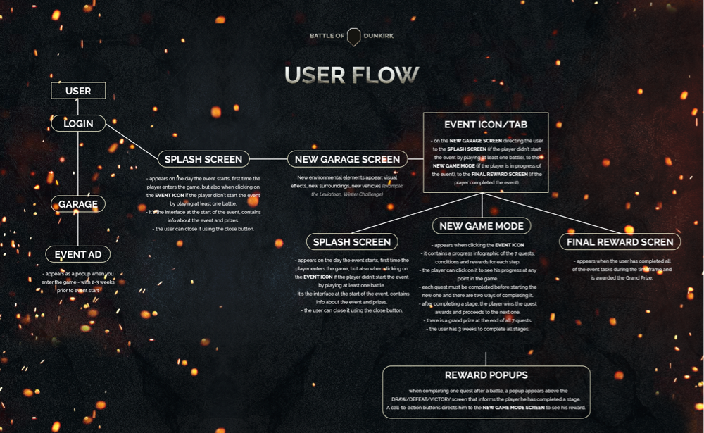
Wireframe
Following the research stage, I went through all the gathered materials and I started the low-fidelity mockups, the wireframes.
SPLASH SCREEN
The first wireframe represents the interface at the start of the event:
NEW GAME MODE SCREEN
The second wireframe represents the interface for a player as the event is taking place:
FINAL SCREEN
The final wireframe represents the interface for a player that has completed all tasks:
I also created an interactive clickable prototype in order to better check the user’s interaction with the new product feature.
High-fidelity prototyping
After designing the low-fidelity prototypes, I started designing the high-fidelity interface for the start of the event, in-progress event and for completing the event. For some of the visual assets (illustrations, vehicle photos), I used materials that I found on the WoT website. For the rest, I had some fun and created a few, using a similar style to the existing ones, doing my best to maintain their brand identity.
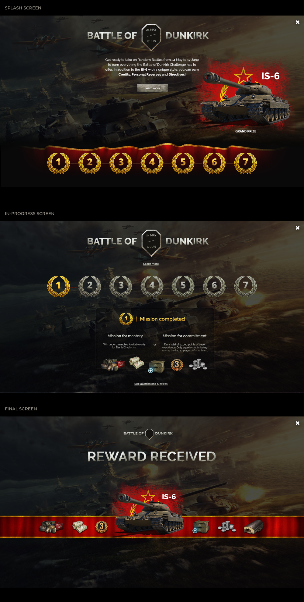I used Adobe XD for wireframing and prototyping, Photoshop and Illustrator for creating the visual assets.
OUTCOME AND RESULTS
Reflections
While working on this project I had the chance to experience the world of online video games, refresh my mindset and get a real feel of what it means to create a digital product having more than 10 million users.
Enterprise identity and access management (IAM) product design: Network Traffic Security Analytics Cloud App
Product Designer at Bitdefender
TASK: UI Design, Visual Design
GOAL: Help IT department, system administrator to automate repetitive tasks
TOOLS: Sketch, Invision
OVERVIEW
What is NTSA Cloud App?
An Identity and Access Management (IAM) platform that provides the IT department with the right tool and technology for provisioning accounts and licenses through an efficient and productive cloud-based system.
BACKGROUND: THE PROBLEM / PROBLEM STATEMENT
The goal / desired outcome / the problem that it was trying to solve
The overaching goal of identity management is to grant access to enterprise assets to the right users, as needed, in a timely fashion. Identity and access management is a critical part of any enterprise security plan, especially for a company that provides cybersecurity services. It serves as a protection layer and safeguards against ransomware, phishing, malware attacks, compromised user credentials and access that can often serve as an open gate into an organization’s network.
This NTSA cloud app also serves as a provisioning tool that gives a single point of maintenance to manage users access to NTSA (Network Traffic Security Analytics, a Bitdefender enterprise security product), that automates tasks suchs as creating, editing and deleting companies, users and licenses, as well as maintaining organized records of clients information such as company details, application credentials and license keys.
The desired outcome was to offer an easy to manage cloud solution, a link between people and technology, and to bring all of the company data together. With all of this in mind, the cloud solution had to ease their day to day tasks, provide security, flexibility, automatic software updates and mobility.
USERS AND AUDIENCE
The Research
A qualitative research debrief was provided by our Customer Experience department, with its main objective being exploring and understanding customers from the mid- market business area. The user research consisted of 17 telephone interviews with a duration of 45-60 minutes each. The results of CX’s research discovered two user personas, young performers and mature performers. The research showed that the two user personas have both differences, but also many similarities. Most of them had a solid education in IT and job positions as follows: IT Manager, IT Technical Support, System Engineer, System Administrator, IT Analyst etc.
Findings
Some of the common frustrations were that they don’t have the chance to perform daily as system administrators, but rather have to solve menial tasks like lost passwords, recovering user accounts, system upgrades and other software issues. They also have to deal with downtime and patching.
ROLES AND RESPONSIBILITIES
My Role
During the project, my role was to undertake building a design system, visual design, branding assets and specifications, creating the high-fidelity prototypes and hand them over to development while also establishing a clear communication line with them for the support phase.
For the first two months, I collaborated with another Designer that was in charge for the low-fidelity mockups and user flows. In addition, I worked alongside a Product Manager and a small team of software developers (half of the team worked remotely).
PROCESS
The Process
Taking into consideration that the allocated time for the project was shortened after a re-prioritization of the roadmap, it was a big challenge to follow a step-by-step design workflow. While the other designer was creating the low-fidelity wireframes, I started building the visual components for the design system.
I attended weekly sync meetings and demos, where we discussed and brainstormed with the whole team, iterating and getting feedback from the Product Manager and the development team. When a wireframe for a screen was approved, I would already start working at the high-fidelity prototype. Engineers were involved in the design process early on, in order to get feedback during the ideation phase. Everytime a developer had questions regarding a certain component or screen, we would sit together and talk about technical capabilities and other issues. We were constantly going back and forth on Slack to discuss implementation.
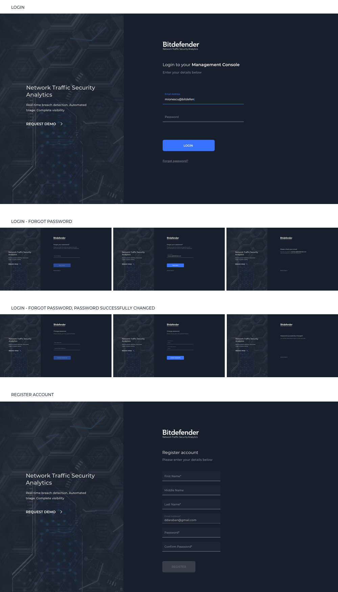The whole process was based on a waterfall model and meant that I had to continuously deliver final prototypes, while also sending time estimates for the newly approved screens, delivering full assets and specifications for finished mockups to the development team and also collaborating with the QA testers.
Evolution of the NTSA cloud app
Creating the NTSA cloud app user interface involved multiple iterations mostly due to technical limitations of the framework and library used by the engineering team.
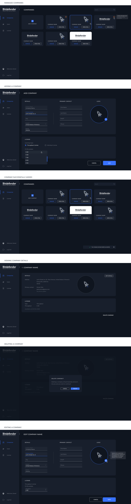After the wireframes were approved, I started bulding the high-fidelity prototypes in Sketch and uploading them to Invision for a fast handover to the development team. Invision is a simple tool that allows developers to pull all the assets and specs for the design and it was actually the first time for the developers to use such a tool. I was excited to find out that they liked it and they found it very useful in getting what they needed with little to no friction.
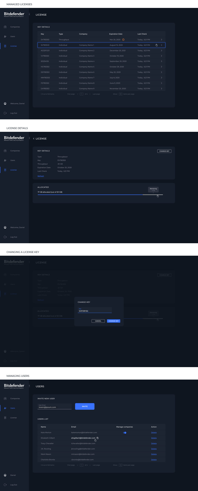Jira was used to track the progress of the stories. Slack was used for online meetings (part of the team was working remotely), Sketch (for designing the UI and the design system), Invision (used for prototyping and handover finalized design, resources and assets for development).
DESIGN EXPLORATION
The Design System
In order to help the development scale the product and future features, I also established a design system. I was nervous at first and didn’t think I would find the time to work on so many tasks simultaneously: building new screens from approved wireframes at the beginning of the sprint, making adjustments to the screens that were in development, support and review the frontend team’s process and build a design system.
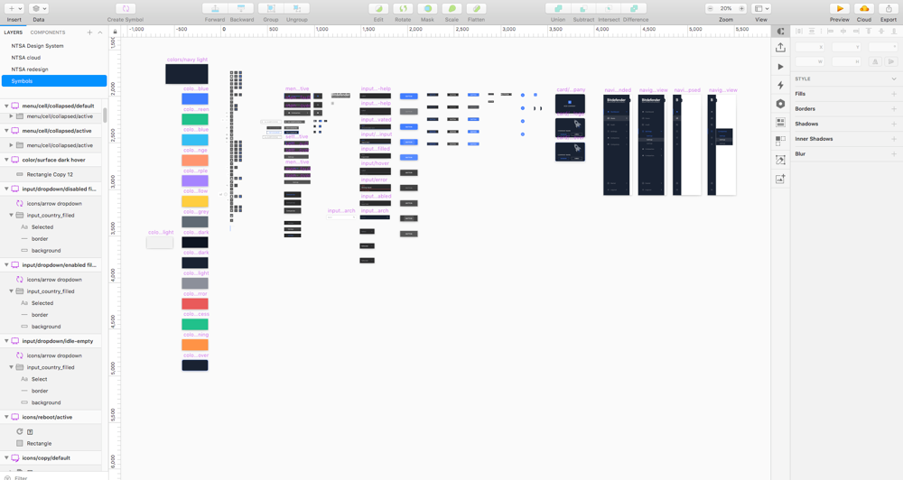The system included a style guide, a component library and more. I used Atomic Design for building the design system, a methodology that divides components into 5 levels: atoms, molecules, organisms, templates and pages. It’s important to add that I was inspired by Material design system when creating the components and that Sketch was used to create the symbol library.
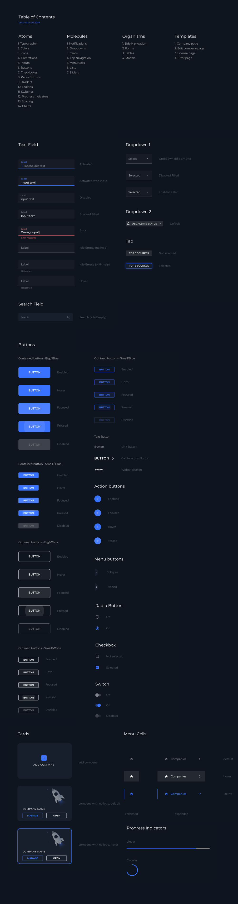Iconography
For the iconography part, I used icons from the Material Design Icon Library, while also designing a few customized ones too. The development team needed a custom made icon font, so I uploaded them to an Icomoon font library.
I decided to use some simple and clean typefaces, Montserrat and Roboto (Montserrat for body copy, buttons and headlines and Roboto for infographics, charts and numerical indicators).
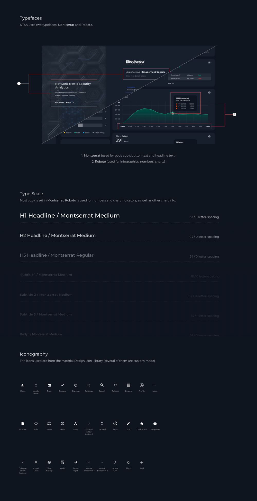Color Scheme - Dark UI
After analyzing the competitors' color scheme, I discussed the idea of having a dark UI with the Product Manager and the team and they were thrilled. The colors are designed to be clear and accessible with a primary color selected to represent the brand. Sometimes, NTSA needs to show multiple infographics on a single screen so, in order to present readable data, I have adopted an extended color theme with one primary color and six additional ones, colors for background, surfaces, errors, typography and iconography.
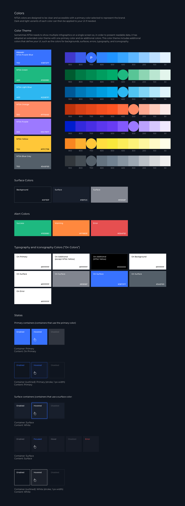Illustrations for empty states
Making illustrations for the empty state pages was so much fun. If you’re wondering why I used a space theme, well, I would say it’s a branding idea that I came up for Bitdefender’s Gravity Zone product. I’m proud to say that it slowly became a leitmotif for all illustrations used for the enterprise products.
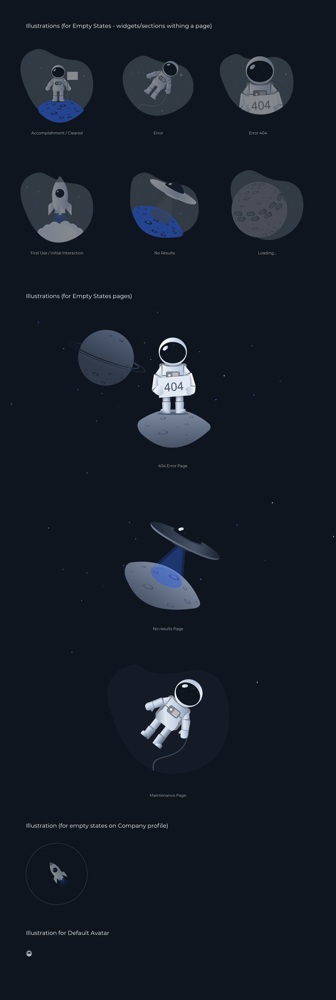OUTCOME AND RESULTS
The challenge / Lessons learned
The target market was enterprise, so this meant working with valuable data. Moreover, when designing for enterprise and business applications, you rarely have the chance to use your own products, so you have to be an excellent researcher and designer in order compensate for not working as a real user with the application you’re building.
It wasn’t enough to know how to design a good web application, I also had to understand security IT standards and adhere to industry guidelines, but also focus my innovation on certain parts, without burying essential data in unneccessary interactions. But that’s only one of the challenges every designer encounters when creating enterprise tools.
Moreover, the project was timeboxed, with a very tight deadline and a busy backlog, which meant that both engineering and design teams had to work under pressure. Being the sole designer in the team for the most part of the project meant that I had to work in the same sprint as the engineering team, alongside them. Delivering fast was essential so that developers could start implementing the mockups as soon as possible. There were times when designs tasks blocked development stories and didn’t allow the designers to focus on their tasks without the pressure of developer requiring design.
This project's biggest challenge was to deliver the MVP on time, while also juggling with multiple tasks in the backlog. Working with at least one sprint before the engineering team wasn’t an option, so we had to make it work even though we didn’t have too much time.
The MVP release was successful and the product launched as planned, but a short while after this had happened, the project was discontinued. Unfortunately, that meant we couldn’t measure the impact of the product, evaluate results from the planned beta testing and get testimonials from customers, although the feedback from our internal teams was good. However, this project provided me with a great opportunity to expand my knowledge.
Menu and dashboard revamp for a business security product: NTSA (Network Traffic Security Analytics)
Product Designer at Bitdefender
TASK: UI Design
GOAL: Redesign the dashboard to help system administrators and security analysts
have an improved experience and overview
TOOLS: Sketch, Invision
OVERVIEW
What is NTSA?
NTSA is a business security solution that analyzes network traffic and detects threats, by using machine learning and behavior analytics.
BACKGROUND: THE PROBLEM / PROBLEM STATEMENT
Problem
The previous dashboard had an obsolete interface design and needed a modern visual style, a more user friendly experience and an improved navigation menu.
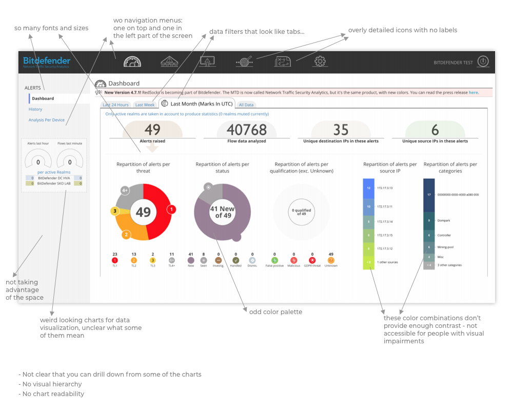RESEARCH
I started the process by understanding the product and the context, what a dashboard may look like and how important data visualization is when it comes to improving the readability of the widgets.
I knew that a good dashboard had to provide an overview of the current status of performance indicators while allowing the users to decide what areas they would like to focus on.
Key takeways
PROCESS
Although I handled only the UI part of this project, I worked closely with a UX designer and was excited to deep dive into the dashboard design principles and best practices.
I also worked together with a dedicated product owner and a small development team. The UX designer created the low-fidelity sketches in Axure. After the wireframes were validated with the product owner, I started working at the interface in Sketch. We also had weekly meetings with the team were we discussed the progress of the MVP and a few workshops with the sales engineers.
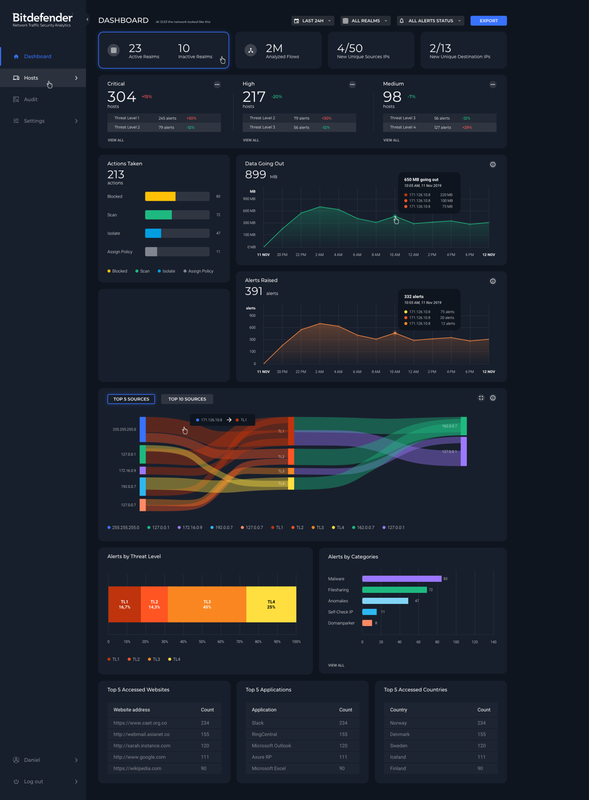When designing dashboards, asking for feedback is essential, so having those workshops helped a lot in improving the layout and the functionality. For example, there were a few sales engineers that found the dashboard was overcrowded with data and widgets.
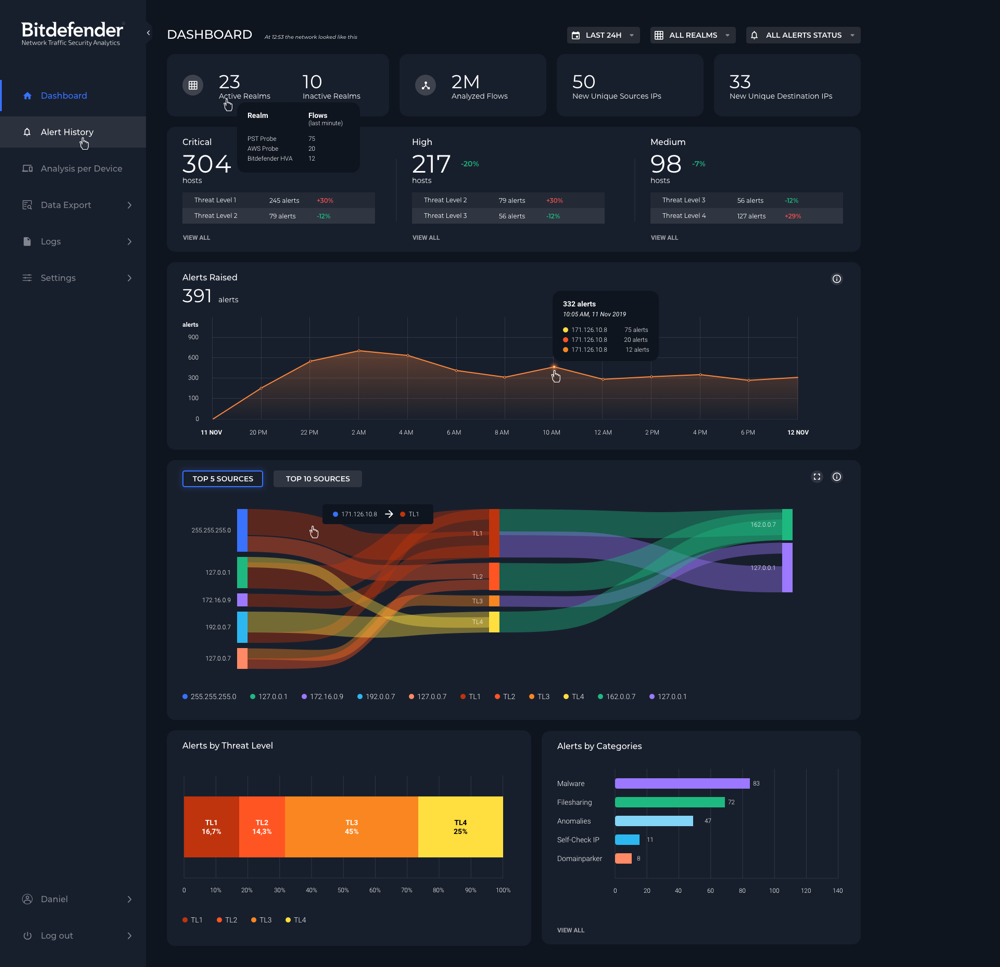As a result, we simplified the layout and focused more on the key indicators that they found useful. Following that, after more design iterations and feedback, we changed the dark theme that we started with to a light theme.
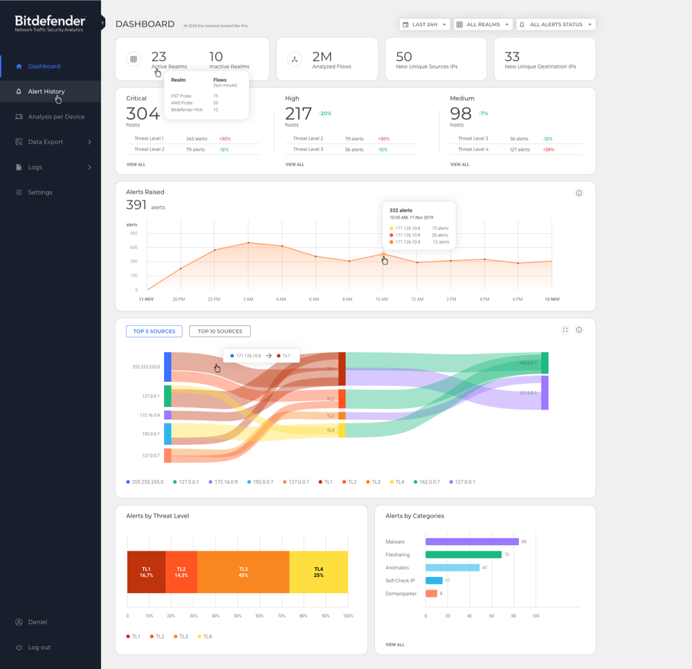The handover was a collaborative process, having to constantly sync with the two full- stack developers that implemented the dashboard and the menu. Even though the mockups were uploaded to Invision and developers had access to all the assets and development specifications, due to the complexity of the dashboard, they needed reviews and support.
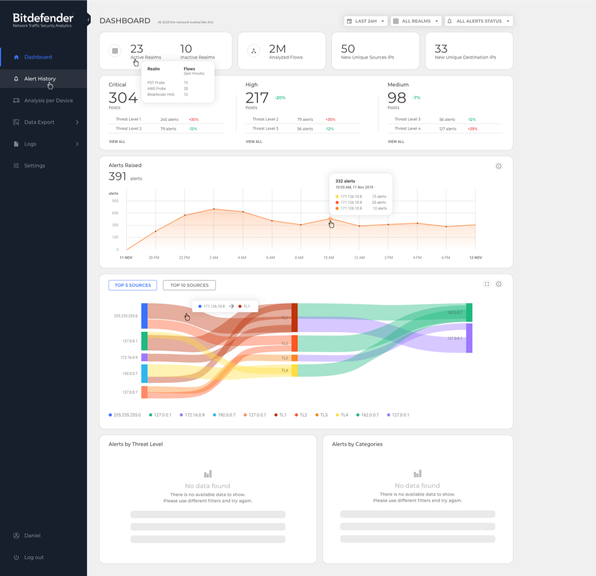CHALLENGES
The biggest challenge was to identify the purpose of the visualization and choose the appropiate chart type. I used a mix of simple charts (bar charts, stacked bar charts, meter charts, sparkline charts) and complex charts. The simple charts offered a way to visualize the data in an easy and intuitive way that told a story. At the same time, the complex charts represented a more powerful way of displaying complex data sets, although less intuitive than basic charts (sankey/alluvial charts). Pie charts were completely removed - users find them difficult to compare when the pie slices are too thin / so thin to even display.
There were a couple of explorations regarding the sankey chart - we received some interesting feeback about the functionality of making it full screen, so the user could better view the nodes and connections.
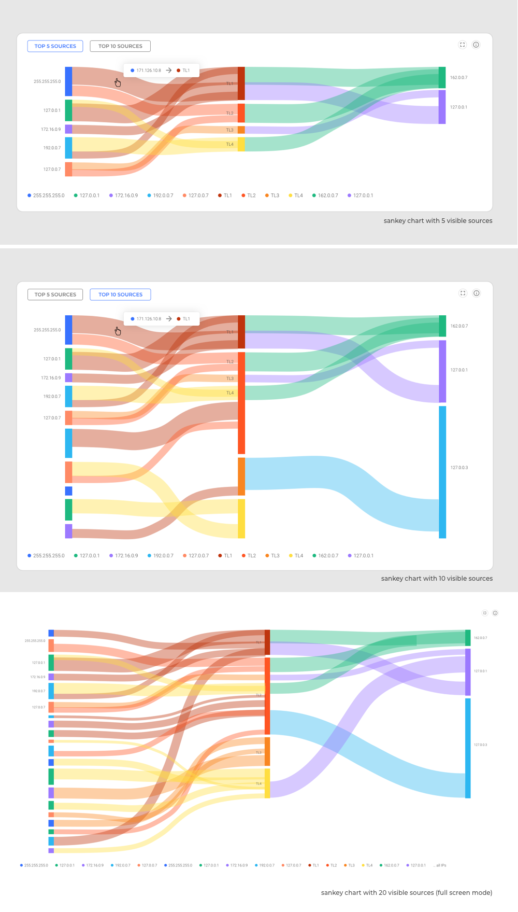We worked in a waterfall way of working and that was a challenge by itself: there were no sprints and the development team needed mockups and quick adjustments as soon as we started the project. I often felt frustrated and pushed to deliver fast, but I eventually adapted.
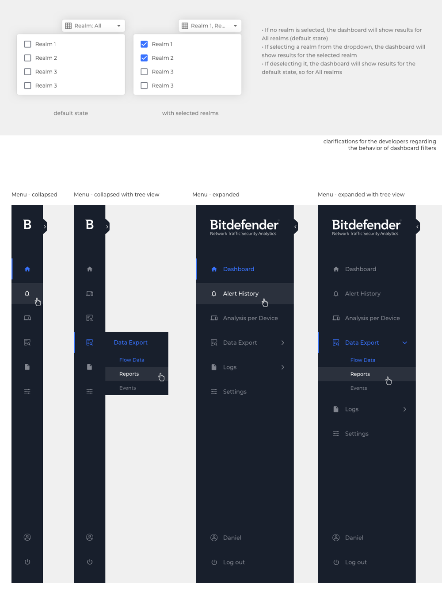There were some some technical constraints along the way when choosing the chart library for the widgets, but eventually we decided to go with Fusion Charts. It was both customizable and aesthetically pleasing.
Fusion Charts was also the starting point for creating the color palette for the data visualization. I used a few non-saturated colors in order to keep the consistency and users wouldn’t feel overwhelmed.
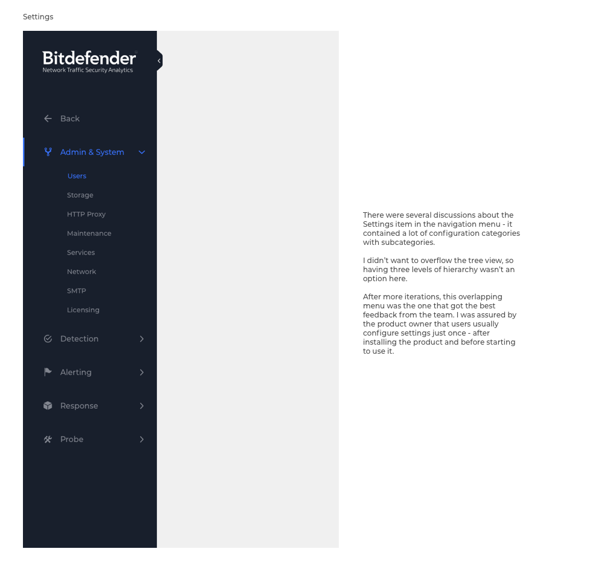OUTCOME AND RESULTS
Lessons learned
Even though this was my second dashboard project that I was working on, I was nervous at first. Compared to the previous version of the dashboard, the new designed dashboard was effective, had a modern look, was balanced and user friendly. The feedback we got from our internal teams was great, but, unfortunately, the project was eventually discontinued (it was later merged with another product).
Mobile web application for a video games store
Self project, Design challenge
TASK: Wireframes, UI Design, Visual Design
GOAL: Create a mobile web application for game players
TOOLS: Balsamiq, Adobe Photoshop, Invision
BACKGROUND
The goal
The goal of this project was to create a mobile web application that highlights new launched games, gives the user the possibility to browse games by category, checks in-progress, paused and past downloads and has access to his/her profile. The requirements included designing the wireframes for a home screen, a product screen, a browse and a download screen, but also the high-fidelity mockups for two of the screens.
Although this was a speculative project, it also was a design challenge that I was excited to accept. I always wanted to create digital products for the game industry. They reach millions of consumers and, hopefully, make their life a lot more easier.
PROCESS
Research
I started my research by quickly building a moodboard. Collecting different screens for mobile and desktop video store applications was more than enough to sketch my first draft of the requiered deliverables. I was already familiarized with the video game world, the functionalities of an online store, the general look and feel.
Findings
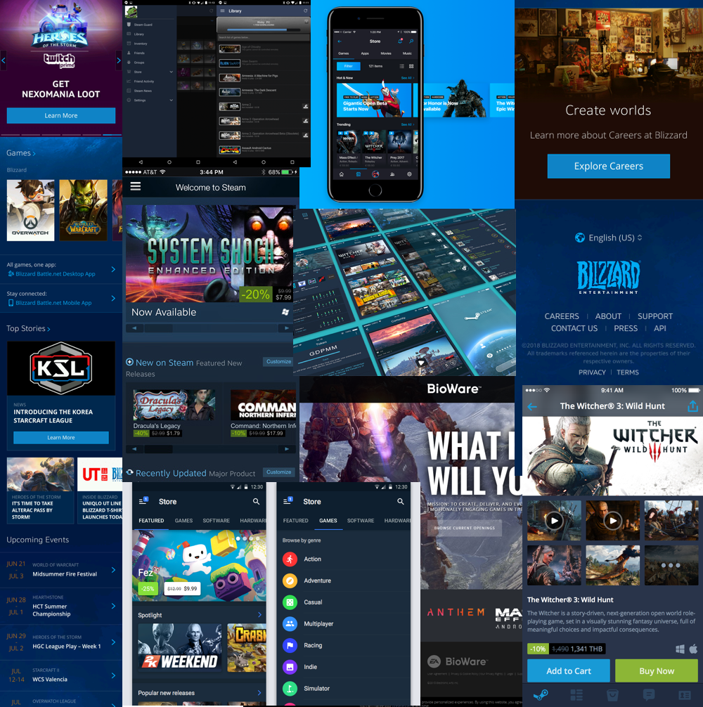Wireframes
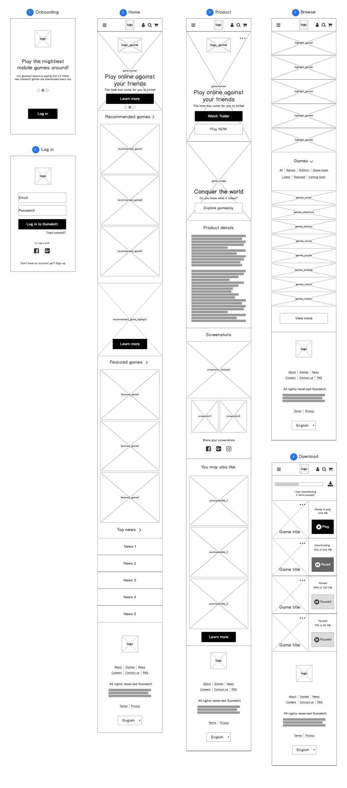
The first screen is a short onboarding and allows the users to immediately realize the product’s value and a slow transitions to the login screen.
The home screen highlights the carousel banner and allows the user to view some of the most popular games in the app. The user will also be able to go through different recommended game groups/categories. Recommendations are provided based on users' previous interests.
After viewing the recommended or featured game list in the home screen, the user will probably click on a game the user finds interesting and land on the product screen. This screen contains a game trailer and screenshots on top. The call-to-action button can motivate the user to engage with the screen and view the trailer. Moving on, when scrolling down, more info about the game will be available: title, description, genre, size in MB, computer requirements, reviews etc.
High-fidelity prototyping

OUTCOME AND RESULTS
Reflections
Being an ambitious and curious person, I always found in design challenges the perfect excuse to outgrow myself and keep learning from hands-on projects.
I was excited to work on this design project, it gave me an opportunity to feed both my creative and analytical mind, to play and test my skills. I got the chance to discover, improve and experiment while creating an interesting ludic product.
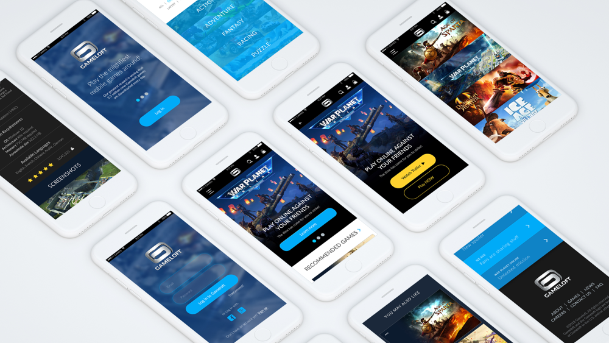Empty States for GravityZone security platform
Product Designer at Bitdefender
TASK: UX Design, UI Design, Visual Design
GOAL: Ease how users interact with empty pages within the platform, by
communicating and providing guidance through text and images
TOOLS: Axure, Adobe Illustrator
OVERVIEW
What is GravityZone?
Bitdefender GravityZone is an enterprise-grade security platform, a next generation antivirus solution for businesses.
PROBLEM
As designers, we are constantly looking for opportunities to create meaningful experiences and add more value to the business. One such opportunity is the “empty state” which refers to the screens where data is missing. When I started working at Bitdefender, I realized that lack of empty states in such a complex product was a real issue.
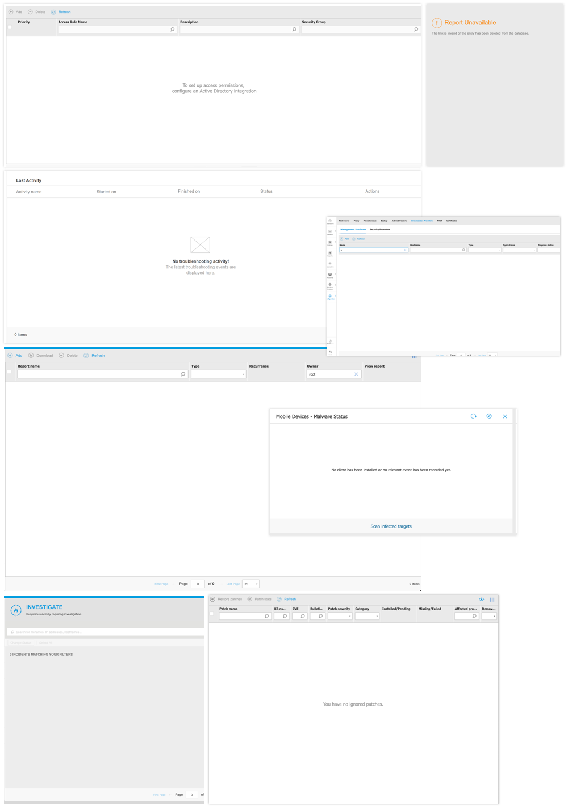Some of these screens are nearly blank and don’t inform or instruct the user about how to proceed in order to go on a certain path. This can only leave users frustrated and lost. Moreover, the lack of information compels the user to spend extra time and effort figuring out their next step.
ROLES AND RESPONSIBILITIES
My Role
I was the only designer working at this feature and worked together with a technical writer for the UI copy. I was responsible for the UX and UI design, but also the illustrations.
RESEARCH
I started the research by doing a few quick moodboards in Axure. I also collected what I could find on empty states UI copy.
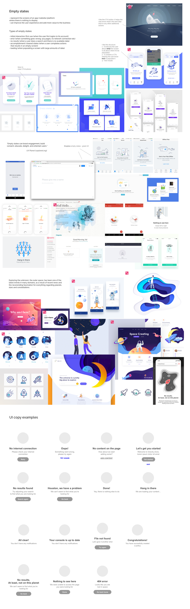After spending some time analyzing the platform, I categorised the empty state opportunities into four types, based on what I thought I would be needing for the task at hand: first use, error, no results and loading.
The result of my analysis was more than unexpected: tens of empty pages with not so much as a text guiding the user. But that was great news, it was going to be a more challenging task than before.
FINDINGS
DESIGN EXPLORATION
Creating the empty states involved multiple iterations and concept explorations.
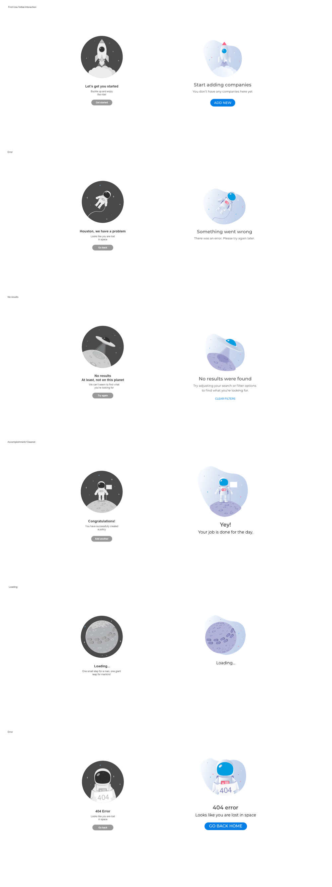Most enterprise security solutions are overly plain and focus more on the functionality. Because I was given the opportunity to be very imaginative, I wanted to design a more positive and playful experience.
I came up with a branding metaphor - the Universe, and successfully used it to design the illustrations. I’m proud to say that the space theme slowly became a leitmotif for all illustrations used for the enterprise products.

Empty state 1: First use
Direct action is required by the user to get started, such as creating a company. Similar to the “No results” empty state, this one engages the user and provides guidance through the creation process, encouraging action.
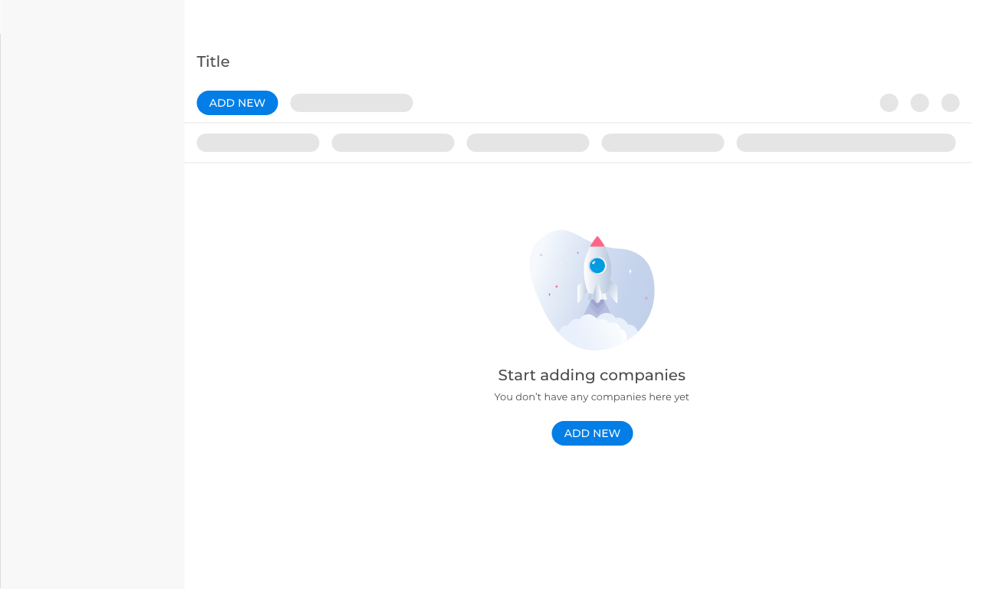Empty state 2: Error
There is no data to show due to an external reason, like a lost internet connection. This scenario is the one that can cause the most frustration for users.
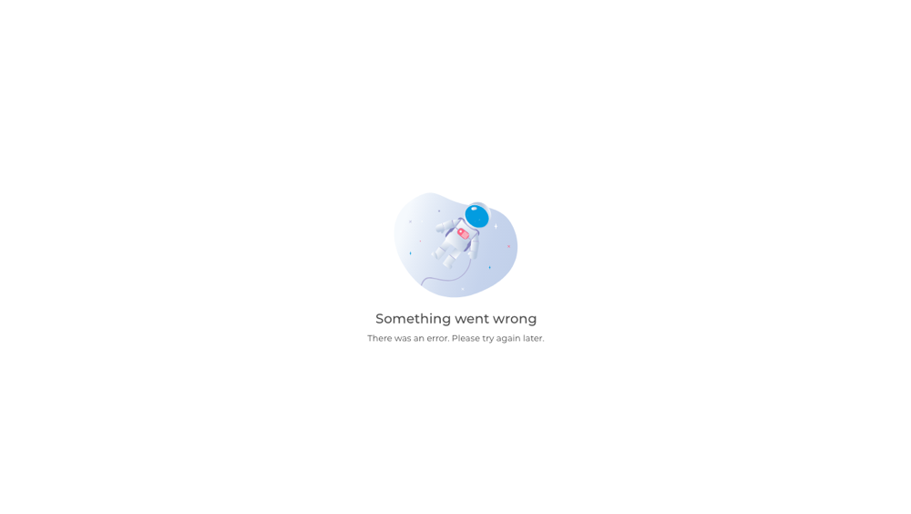Empty state 3: No results
This empty state occurs as a result of a user action and has to explain the reason for showing the message and provide steps to guide the user.
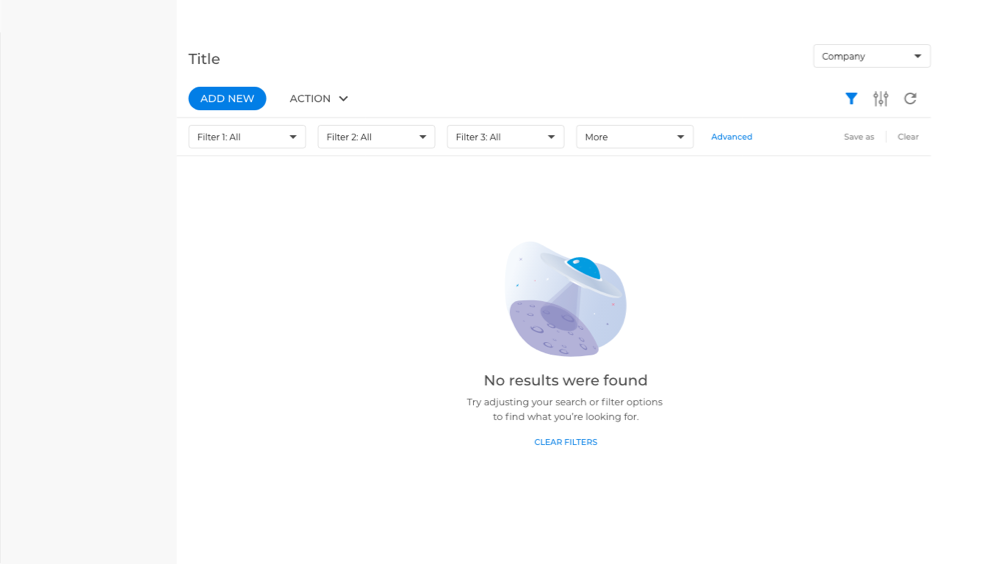Although it’s recommended that an empty state for a table replace the whole table (in order to avoid having a screen reader read the entire table before getting to the message that there is no content in the table, according to Jakob Nielsen), I decided to go with a different approach.
The data tables that occur in the platform are heavy-duty and complex, with many filtering options available. Having the user customize the filters for a few minutes, applying the changes and not seeing any results, is a viable user case. In this case, the "Clear filters" button wasn’t enough for a good design solution. I decided to keep the filters visible, so that the user can modify them after having read the “no results found” message.
Empty state 4: Loading
Skeleton screen, when used to indicate that a screen is loading, are perceived as being shorter in duration when compared to a blank screen or a spinner. Using slow motion (like a wave, from left to right) also improves the overall waiting experience.
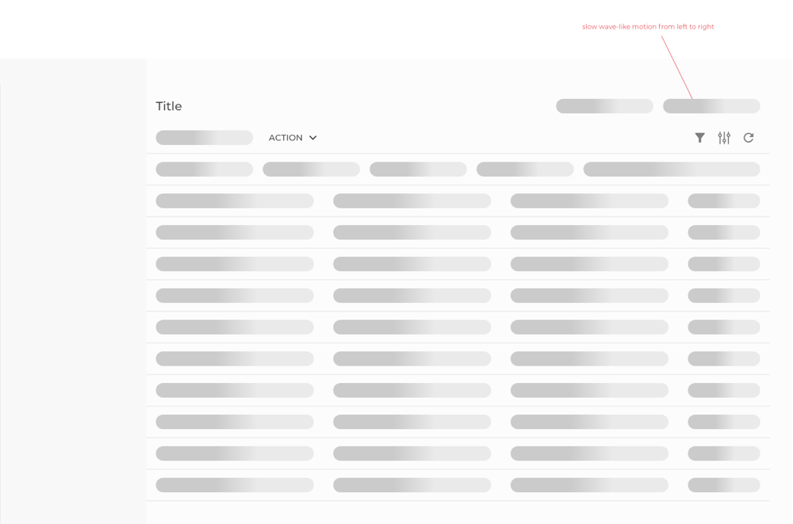OUTCOME AND RESULTS
The challenge / Lessons learned
What I learned from this project was that the benefits of including empty states in any product are understated, as they enhance the user experience and help create a more cohesive product.
This was a challenging task that allowed me to combine both the visual with the analytical part of creating a feature for a product.